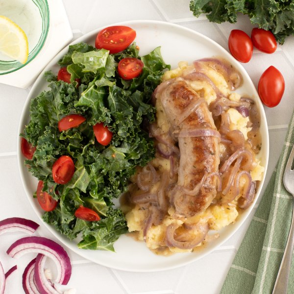

British-Style Sausage with Mashed Potatoes, Onion Gravy & Kale Salad

Nutrition (per serving)
698 kcalCalories
28.5 gProtein
64.6 gCarbs
37.3 gFat
Full nutrition table
| Calories | 698 kcal |
| Total fat | 37.3 g |
| Saturated fat | 14.9 g |
| Trans fat | 0.5 g |
| Cholesterol | 102.2 mg |
| Sodium | 795.1 mg |
| Carbohydrates | 64.6 g |
| Fiber | 10.2 g |
| Sugars | 7.3 g |
| Protein | 28.5 g |
| Potassium | 2078.2 mg |
| Calcium | 120.4 mg |
| Iron | 4.7 mg |
| Vitamin A | 684.2 IU |
| Vitamin C | 89.8 mg |
| Vitamin D | 31.8 IU |
Cookware
Ingredients
- 16 fl ozchicken or vegetable broth
- 1 pintgrape tomatoes
- 1 bunchkale
- 4pork sausages
- 1 mediumred onion
- 6 mediumyellow potatoes
- all-purpose flour
- black pepper
- butter, unsalted
- Dijon mustard
- salt
- thyme, dried
- white wine vinegar
Steps
- Wash and dry the fresh produce.6 medium yellow potatoes
1 bunch kale
1 pint grape tomatoes - Peel and medium dice potatoes; place in a large pot and cover with hot water (from the tap). Cover and bring to a boil over high heat; once boiling, reduce to a simmer and cook until soft, 10-12 minutes.
- Meanwhile, preheat a large skillet over medium-high heat.
- Once the skillet is hot, add butter and swirl to coat the bottom. Add sausages and cook, turning occasionally, until golden, about 5 minutes (the sausages will not be cooked all the way through). Transfer to a plate. (Reserve skillet for later use.)2 tsp butter, unsalted
4 pork sausages - While the sausages cook, peel, halve, and slice onion into thin half-moons.1 medium red onion
- Return skillet to medium heat, add more butter, and swirl to coat the bottom; add onion and cook, stirring constantly, until softened, about 2 minutes.4 tsp butter, unsalted
- Sprinkle flour over onion and continue to cook, stirring constantly, until lightly golden, about 1 minute.2 tbsp all-purpose flour
- Stir in broth and spices, then bring gravy to a simmer. Once simmering, return sausages to the skillet, reduce heat to low, and cover with a lid; cook, turning sausages occasionally, until gravy has thickened and sausages are cooked through, 6-8 minutes more. Remove from heat.16 fl oz (2 cups) chicken or vegetable broth
1 tsp thyme, dried
1 tsp salt
¼ tsp black pepper - When the potatoes are done, drain in a colander and return to the pot. Add butter, salt, and pepper; using a potato masher, mash until smooth. Cover to keep warm.4 tsp butter, unsalted
½ tsp salt
¼ tsp black pepper - Place vinegar, water, Dijon, and salt in medium bowl; whisk to combine the dressing.4 tsp white wine vinegar
2 tsp water
2 tsp Dijon mustard
½ tsp salt - Fold kale leaves in half lengthwise and slice off the stems. Chop or tear leaves into bite-sized pieces and add to the bowl with the dressing. Using your hands, massage the dressing into the kale.
- Halve tomatoes, add to the bowl with the kale, and toss to combine the salad.
- Divide mashed potatoes between plates, then top with sausages and gravy. Serve with salad on the side and enjoy!